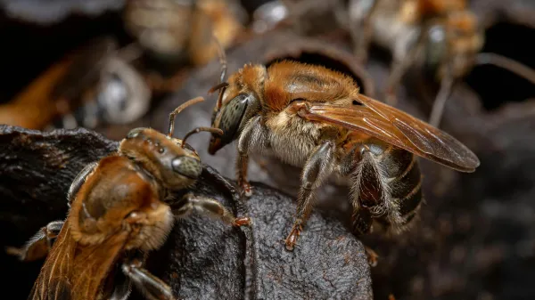

La abeja más popular de todas es la abeja melífera, Apis mellifera, pero existe una gran variedad de otro tipo de abejas no tan conocidas, sea por su origen silvestre o incluso por desplazamiento frente a otras abejas que las han relegado. Entre los diferentes tipos de abejas tenemos a las meliponas, del género Melipona spp., todas de origen americano. Existen 50 especies, pero la más famosa de ellas es la Melipona beecheii, que es a la que se le suele llamar por lo general abeja melipona. Ha sido de importancia prehispánica, y hoy en día todavía es valorada por ser curativa. En esta oportunidad estaremos hablando de esta abeja melipona.